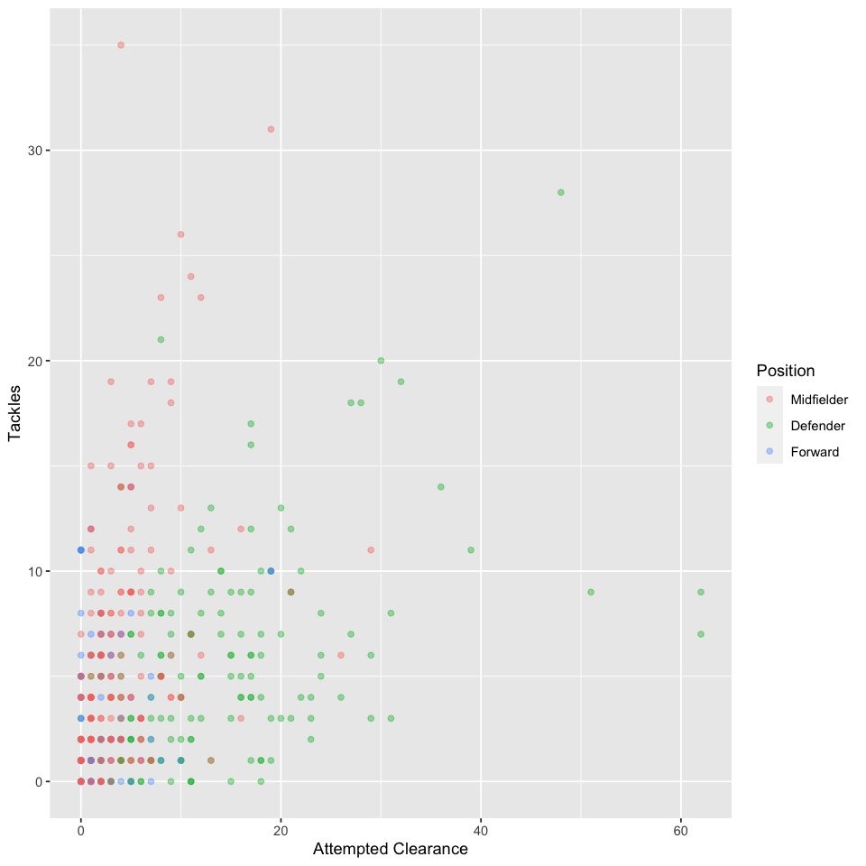
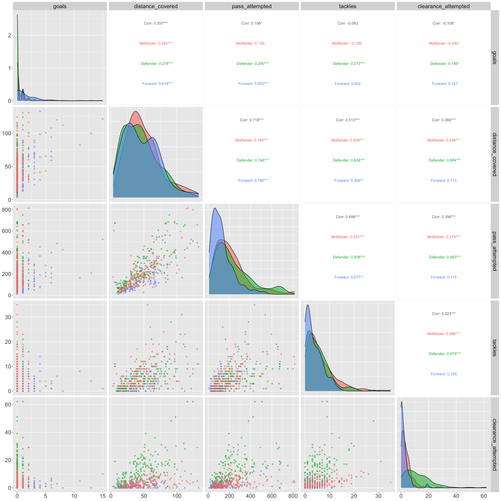
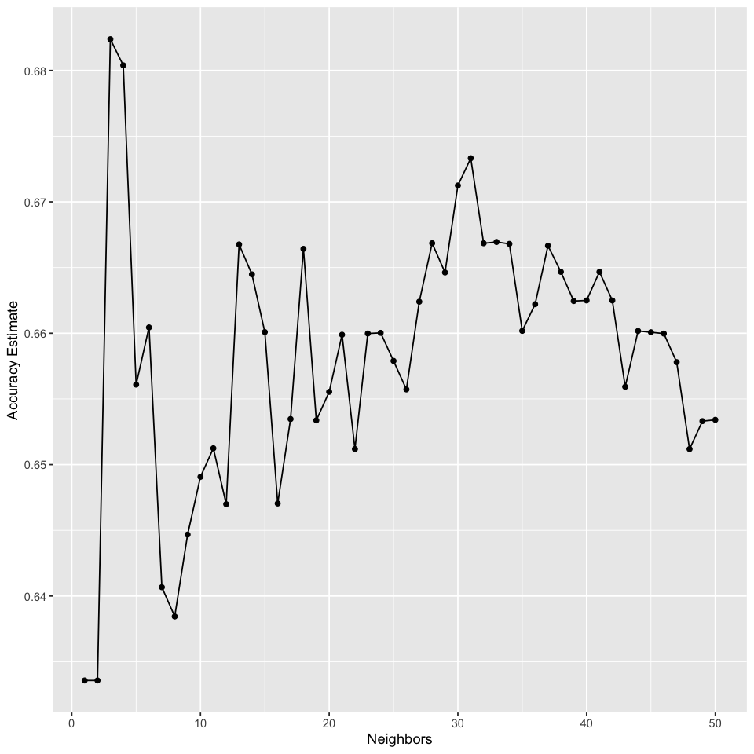

The UEFA Champions League is one of the most presitigous and widely followed club football competitions. The competition brings elite football clubs from across Europe together in competition.The data we chose to analyze is about game statistics. We are using the keystats.csv dataset. Our data set contains serial number, player name, club name, position, and various game statistics such as distance traveled on the field, number of goals, tackles attempted, etc. Our goal is to use the game statistics like number of goals and distance traveled on the field to predict the positions of the players.
Predict the position of the player that participated in UEFA Champions League 2021-2022 based on the statistics that we have, such as goals, distance covered, etc.
The dataset source is the UEFA player statistics for every player in the UEFA Champions League in the 2021-2022 season scraped by Azmine Toushik Wasi from the UEFA website.
First of all, the data has been pushed to our group's github repository. Therefore, we can use the read_csv function to read all the data we need (our data is separated into several files). First of all, we need to initialize the libraries we are going to use
library(tidyverse)
library(repr)
library(tidymodels)
library(kknn)
library(GGally)
options(repr.matrix.max.rows = 6)-- Attaching core tidyverse packages ------------------------ tidyverse 2.0.0 --
v dplyr 1.1.3 v readr 2.1.4
v forcats 1.0.0 v stringr 1.5.0
v ggplot2 3.4.4 v tibble 3.2.1
v lubridate 1.9.3 v tidyr 1.3.0
v purrr 1.0.2
-- Conflicts ------------------------------------------ tidyverse_conflicts() --
x dplyr::filter() masks stats::filter()
x dplyr::lag() masks stats::lag()
i Use the conflicted package (<http://conflicted.r-lib.org/>) to force all conflicts to become errors
-- Attaching packages -------------------------------------- tidymodels 1.1.1 --
v broom 1.0.5 v rsample 1.2.0
v dials 1.2.0 v tune 1.1.2
v infer 1.0.5 v workflows 1.1.3
v modeldata 1.2.0 v workflowsets 1.0.1
v parsnip 1.1.1 v yardstick 1.2.0
v recipes 1.0.8
-- Conflicts ----------------------------------------- tidymodels_conflicts() --
x scales::discard() masks purrr::discard()
x dplyr::filter() masks stats::filter()
x recipes::fixed() masks stringr::fixed()
x dplyr::lag() masks stats::lag()
x yardstick::spec() masks readr::spec()
x recipes::step() masks stats::step()
* Learn how to get started at https://www.tidymodels.org/start/
Registered S3 method overwritten by 'GGally':
method from
+.gg ggplot2
The dataset we will use are the key stats, defending, and distribution dataset. We will read them using the read_csv function
key_stats <- read_csv("https://raw.githubusercontent.com/JoelGunawan/dsci-100-009-group-8/main/data/key_stats.csv")
defending <- read_csv("https://raw.githubusercontent.com/JoelGunawan/dsci-100-009-group-8/main/data/defending.csv")
distribution <- read_csv("https://raw.githubusercontent.com/JoelGunawan/dsci-100-009-group-8/main/data/distributon.csv")Rows: 747 Columns: 8
-- Column specification --------------------------------------------------------
Delimiter: ","
chr (4): player_name, club, position, distance_covered
dbl (4): minutes_played, match_played, goals, assists
i Use `spec()` to retrieve the full column specification for this data.
i Specify the column types or set `show_col_types = FALSE` to quiet this message.
Rows: 627 Columns: 10
-- Column specification --------------------------------------------------------
Delimiter: ","
chr (4): serial, player_name, club, position
dbl (6): balls_recoverd, tackles, t_won, t_lost, clearance_attempted, match_...
i Use `spec()` to retrieve the full column specification for this data.
i Specify the column types or set `show_col_types = FALSE` to quiet this message.
Rows: 608 Columns: 12
-- Column specification --------------------------------------------------------
Delimiter: ","
chr (4): serial, player_name, club, position
dbl (8): pass_accuracy, pass_attempted, pass_completed, cross_accuracy, cros...
i Use `spec()` to retrieve the full column specification for this data.
i Specify the column types or set `show_col_types = FALSE` to quiet this message.
The data we have is separated into several different datasets, therefore we will merge the dataset together using the merge function, which will merge two different data frames based on a certain property
football <- merge(key_stats, defending, by = "player_name") |>
merge(distribution, by = "player_name")
football| player_name | club.x | position.x | minutes_played | match_played.x | goals | assists | distance_covered | serial.x | club.y | ... | club | position | pass_accuracy | pass_attempted | pass_completed | cross_accuracy | cross_attempted | cross_complted | freekicks_taken | match_played |
|---|---|---|---|---|---|---|---|---|---|---|---|---|---|---|---|---|---|---|---|---|
| <chr> | <chr> | <chr> | <dbl> | <dbl> | <dbl> | <dbl> | <chr> | <chr> | <chr> | ... | <chr> | <chr> | <dbl> | <dbl> | <dbl> | <dbl> | <dbl> | <dbl> | <dbl> | <dbl> |
| <U+00C1>lvarez | Ajax | Midfielder | 558 | 7 | 0 | 0 | 73 | 121 | Ajax | ... | Ajax | Midfielder | 93.3 | 363 | 340 | 0 | 1 | 0 | 7 | 7 |
| <U+00C9>der Milit<U+00E3>o | Real Madrid | Defender | 1076 | 12 | 0 | 0 | 110.4 | 01 | Real Madrid | ... | Real Madrid | Defender | 87.5 | 643 | 563 | 0 | 2 | 0 | 17 | 12 |
| <U+00D3>liver Torres | Sevilla | Midfielder | 168 | 4 | 0 | 0 | 25.8 | 479 | Sevilla | ... | Sevilla | Midfielder | 79.5 | 122 | 105 | 20 | 5 | 1 | 2 | 4 |
| ... | ... | ... | ... | ... | ... | ... | ... | ... | ... | ... | ... | ... | ... | ... | ... | ... | ... | ... | ... | |
| Zeki <U+00C7>elik | LOSC | Defender | 591 | 7 | 0 | 1 | 71.3 | 121 | LOSC | ... | LOSC | Defender | 78.0 | 297 | 233 | 33 | 12 | 4 | 9 | 7 |
| Zinchenko | Man. City | Defender | 501 | 8 | 0 | 1 | 64.4 | 102 | Man. City | ... | Man. City | Defender | 88.0 | 356 | 314 | 23 | 13 | 3 | 4 | 8 |
| Ziyech | Chelsea | Midfielder | 446 | 9 | 1 | 2 | 53.5 | 317 | Chelsea | ... | Chelsea | Midfielder | 76.8 | 240 | 186 | 26 | 41 | 11 | 3 | 9 |
We will wrangle the data in several ways before we can use it. First of all, we will change the position to a factor because it is a categorical value. After that, the distance covered initially given is stored in a character value, but we need it as a numeric. Therefore, we will convert it to a numeric column. After that, we will remove all goalkeepers from our model, because the position of goalkeeper is concrete and predicting which players are goalkeepers are not of relevance to anyone because they are so distinct. Finally, we will select the columns we want to use
We will take the data and select the columns that are relevant to our prediction. In this case we choose goals, distance covered, passes attempted, tackles, and attempted clearances. We chose these variables because they or some combination of variables would typically be different based on the position. Offensive players score higher number of goals. Defenders and midfielders tend to have higher passes attempted. The most tackles come from offensive players pressing the opposition and defenders in defense. Finally, nearly all attempted clearances are done by defenders.
football_data <- football |>
mutate(position = as_factor(position)) |>
mutate(distance_covered = as.numeric(distance_covered)) |>
filter(position != "Goalkeeper") |>
select(position, goals, distance_covered, pass_attempted, tackles, clearance_attempted)
football_data| position | goals | distance_covered | pass_attempted | tackles | clearance_attempted |
|---|---|---|---|---|---|
| <fct> | <dbl> | <dbl> | <dbl> | <dbl> | <dbl> |
| Midfielder | 0 | 73.0 | 363 | 19 | 7 |
| Defender | 0 | 110.4 | 643 | 19 | 32 |
| Midfielder | 0 | 25.8 | 122 | 0 | 0 |
| ... | ... | ... | ... | ... | ... |
| Defender | 0 | 71.3 | 297 | 8 | 8 |
| Defender | 0 | 64.4 | 356 | 6 | 8 |
| Midfielder | 1 | 53.5 | 240 | 5 | 1 |
We will split the data into training and testing datasets
# Set seed so the workflow is reproducible
set.seed(5000)
football_split <- initial_split(football_data, prop = 0.75, strata = position)
football_train <- training(football_split)
football_test <- testing(football_split)
football_train| position | goals | distance_covered | pass_attempted | tackles | clearance_attempted |
|---|---|---|---|---|---|
| <fct> | <dbl> | <dbl> | <dbl> | <dbl> | <dbl> |
| Defender | 0 | 110.4 | 643 | 19 | 32 |
| Defender | 0 | 46.3 | 225 | 6 | 24 |
| Defender | 1 | 36.9 | 259 | 3 | 19 |
| ... | ... | ... | ... | ... | ... |
| Midfielder | 1 | 59.1 | 295 | 8 | 6 |
| Midfielder | 0 | 24.3 | 66 | 5 | 3 |
| Midfielder | 0 | 54.1 | 218 | 8 | 4 |
First, let us look at the amount of players in each position
pos_count <- football_train |>
group_by(position) |>
summarize(amount = n())
pos_count| position | amount |
|---|---|
| <fct> | <int> |
| Midfielder | 189 |
| Defender | 178 |
| Forward | 92 |
We will check how many NA values are in our dataset
na_data <- football_train |>
group_by(position) |>
summarize(cntna = sum(is.na(goals:clearance_attempted)))
na_dataWarning message:
"There were 3 warnings in `summarize()`.
The first warning was:
i In argument: `cntna = sum(is.na(goals:clearance_attempted))`.
i In group 1: `position = Midfielder`.
Caused by warning in `goals:clearance_attempted`:
! numerical expression has 189 elements: only the first used
i Run `dplyr::last_dplyr_warnings()` to see the 2 remaining warnings."
| position | cntna |
|---|---|
| <fct> | <int> |
| Midfielder | 0 |
| Defender | 0 |
| Forward | 0 |
We do not have any NA data because the NA data has been removed when we were merging the dataset previously
First, we will try to visualize one of the two predictor variables we will use, which are the clearances attempted and tackles. We will visualize the data in a scatter plot
options(repr.plot.width = 8, repr.plot.height = 8)
football_plot <- football_train |>
ggplot(aes(x = clearance_attempted, y = tackles, color = position)) +
geom_point(alpha = 0.4) +
labs(x = "Attempted Clearance", y = "Tackles", color = "Position")
football_plot
As the visualization demonstrates, most defenders have high numbers of attempted clearances (the bottom right of the graph). In addition, most midfielders have a high number of tackles (the top left of the graph).
We will visualize all pairs of the columns we chose
options(repr.plot.width = 20, repr.plot.height = 20)
pairs_plot <- ggpairs(football_train, columns = 2:ncol(football_train), aes(color = position, alpha = 0.2)) +
theme(text = element_text(size = 20))
pairs_plot
We will visualize our training results using a line graph representing the accuracy of our predictions across several values. For the testing results, we can simply use the accuracy to measure our results. This is because we do not have a particular category of interest.
We are going to perform the data analysis using the KNN algorithm. In this analysis, we will try K values from 2 to 30 with step of 1 to find the optimal K value.
The following is the code for finding the optimal K value of the KNN.
set.seed(5000)
training_spec <- nearest_neighbor(weight_func = "rectangular", neighbors = tune()) |>
set_engine("kknn") |>
set_mode("classification")
knn_recipe <- recipe(position ~ ., data = football_train) |>
step_scale(all_predictors()) |>
step_center(all_predictors())
training_vfold <- vfold_cv(data = football_train, v = 10, strata = position)
k_vals <- tibble(neighbors = seq(from = 1, to = 50, by = 1))
training_fit <- workflow() |>
add_recipe(knn_recipe) |>
add_model(training_spec) |>
tune_grid(resamples = training_vfold, grid = k_vals)
training_metrics <- training_fit |>
collect_metrics() |>
filter(.metric == "accuracy")
training_metrics> A | warning: No observations were detected in `truth` for level(s): 'Goalkeeper'
Computation will proceed by ignoring those levels.
There were issues with some computations A: x1
There were issues with some computations A: x2
There were issues with some computations A: x6
There were issues with some computations A: x10
There were issues with some computations A: x10
| neighbors | .metric | .estimator | mean | n | std_err | .config |
|---|---|---|---|---|---|---|
| <dbl> | <chr> | <chr> | <dbl> | <int> | <dbl> | <chr> |
| 1 | accuracy | multiclass | 0.6335746 | 10 | 0.01895652 | Preprocessor1_Model01 |
| 2 | accuracy | multiclass | 0.6335746 | 10 | 0.01895652 | Preprocessor1_Model02 |
| 3 | accuracy | multiclass | 0.6823801 | 10 | 0.02509471 | Preprocessor1_Model03 |
| ... | ... | ... | ... | ... | ... | ... |
| 48 | accuracy | multiclass | 0.6511823 | 10 | 0.02194116 | Preprocessor1_Model48 |
| 49 | accuracy | multiclass | 0.6533100 | 10 | 0.02043824 | Preprocessor1_Model49 |
| 50 | accuracy | multiclass | 0.6534088 | 10 | 0.01935942 | Preprocessor1_Model50 |
options(repr.plot.width = 8, repr.plot.height = 8)
accuracy_plot <- ggplot(training_metrics, aes(x = neighbors, y = mean)) +
geom_point() +
geom_line() +
labs(x = "Neighbors", y = "Accuracy Estimate")
accuracy_plot
As we can see, the maximum accuracy is when K = 3. As a result, we will pick K = 4 because it is a larger value and it is more stable (because K = 3 might be so small that a slight change in value might produce a large change in the result). The following is the code for the final model.
knn_spec <- nearest_neighbor(weight_func = "rectangular", neighbors = 4) |>
set_engine("kknn") |>
set_mode("classification")
knn_fit <- workflow() |>
add_recipe(knn_recipe) |>
add_model(knn_spec) |>
fit(data = football_train)
knn_fit== Workflow [trained] ==========================================================
Preprocessor: Recipe
Model: nearest_neighbor()
-- Preprocessor ----------------------------------------------------------------
2 Recipe Steps
* step_scale()
* step_center()
-- Model -----------------------------------------------------------------------
Call:
kknn::train.kknn(formula = ..y ~ ., data = data, ks = min_rows(4, data, 5), kernel = ~"rectangular")
Type of response variable: nominal
Minimal misclassification: 0.3572985
Best kernel: rectangular
Best k: 4Finally, we will check our accuracy with the testing data
test_result <- predict(knn_fit, football_test) |> bind_cols(football_test)
accuracy <- test_result |>
metrics(truth = position, estimate = .pred_class) |>
filter(.metric == "accuracy")
accuracy| .metric | .estimator | .estimate |
|---|---|---|
| <chr> | <chr> | <dbl> |
| accuracy | multiclass | 0.5483871 |
The analysis delved into predicting player positions in the UEFA Champions League using performance metrics such as goals scored, distance covered, passes attempted, tackles, and attempted clearances. Leveraging the K-Nearest Neighbors (KNN) classification model, the study aimed to classify players into positions based on these metrics. Through data preprocessing, model tuning, and visualization, distinct clusters emerged, revealing discernible patterns between defenders and midfielders.
The observed patterns largely aligned with expectations. Defenders exhibited higher attempted clearances, while midfielders displayed more tackles. These trends correspond well with traditional positional roles in football. However, there were nuances and overlaps, such as midfielders occasionally exhibiting defensive traits and vice versa, highlighting the evolving nature of player roles.
Such findings possess substantial implications across various domains. For coaches and scouts, understanding these key performance indicators aids in player recruitment and strategic planning. It offers nuanced insights into player roles, enhancing tactical formations and team strategies. Furthermore, for fans, analysts, and fantasy football enthusiasts, it deepens the understanding of player profiles, enriching the spectator experience.
The analysis raises intriguing avenues for further exploration. It prompts inquiries into the influence of additional factors like player age, playing style, or team tactics on the relationships between performance metrics and player positions. Additionally, extending the model to incorporate a broader array of performance metrics could refine position classification, leading to more sophisticated machine learning models.
Azmine Toushik Wasi. 2022. UEFA Champions League 2021-2022 Player Statistics. Kaggle. Retrieved from UEFA Champions League 2021-2022 Dataset
UEFA Champions League. (n.d.). In Wikipedia. Retrieved from https://en.wikipedia.org/wiki/UEFA_Champions_League
2021–22 UEFA Champions League. (n.d.). In Wikipedia. Retrieved from https://en.wikipedia.org/wiki/2021–22_UEFA_Champions_League